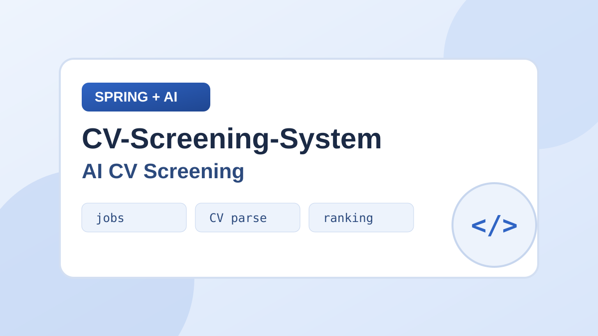
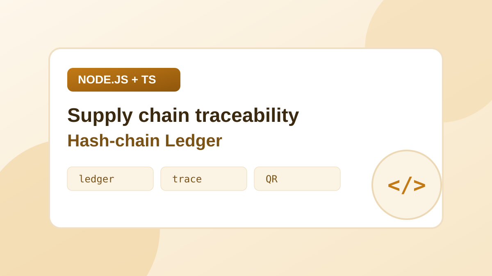

Some works I’ve done ⊂(•‿•)つ Last updated: 2026-11-21  CV-Screening-System Recruitment platform where HR posts jobs, candidates upload CVs, and a Python AI worker parses, scores and ranks applicants against the job description — processed asynchronously through a message queue on AWS S3 + SQS. JUL 2026 - NOV 2026 github.com/Tanphat25022005/CV-Screening-System  Supply-chain-traceability Product traceability system built on a SHA-256 hash-chain ledger with tenant isolation, role-based access for every supply chain stage, and a public QR page for consumers. JUN 2026 - OCT 2026 github.com/Tanphat25022005/Supply-chain-traceability Digital Banking System Full-stack digital banking simulation with an API gateway, identity, core banking and audit services — covering accounts, transfers, OTP verification, RBAC and audit logging. MAR 2026 - JUN 2026 github.com/DThanhgoo/digital-banking-blockchain